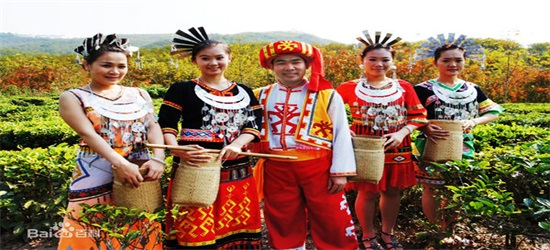
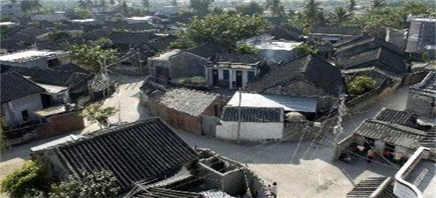
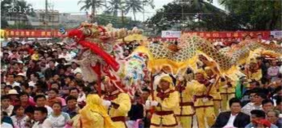
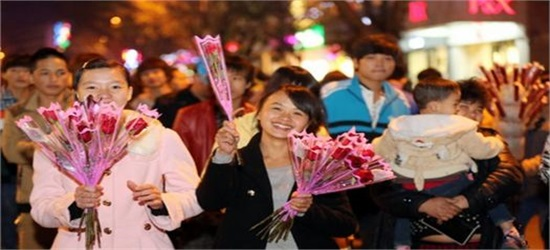
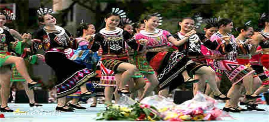
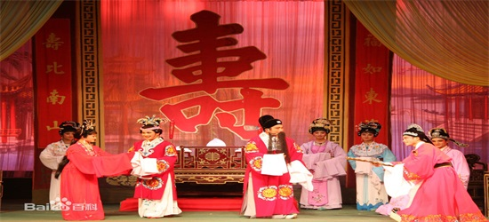
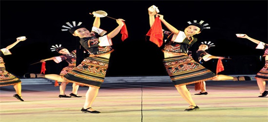
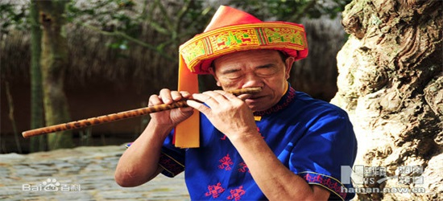

黎族服饰，主要是利用海岛棉、麻、木棉、树皮纤维和蚕丝织制缝合而成。远古的时候，有些地方还利用楮树或见血封喉树的树皮作为服饰材料。这种服饰材料，是从山上砍下树皮，经过拍打去掉外层皮渣，剩下纤维层，然后用石灰（螺壳烧成的灰）浸泡晒干而成。
黎族男子一般穿对襟无领的上衣和长裤，缠头巾插雉翎。妇女穿黑色圆领贯头衣，配以诸多饰物，领口用白绿两色珠串连成三条套边，袖口和下摆以花纹装饰，前后身用小珠串成彩色图案。下穿紧身超短筒裙。有些身着黑、蓝色平领上衣，袖口上绣白色花纹，后背有一道横条花纹，下着色彩艳丽的花筒裙，裙子的合口褶设在前面，盛装时头插银钗，颈戴银链、银项圈，胸挂珠铃，手戴银圈。头系黑布头巾。

海南传统民居是海南琼北地区居民特色居住建筑，包括文昌、琼山等传统类四合院似汉族民居和近代骑楼民居。
海南最早的移民大多由闽南地区迁移而来，早期民居体现出深厚的闽南风格。随后，岭南、云贵以及东南亚等周边地区移民带来了各自地区的文化，琼北民居也逐渐加入岭南风格。同时，大量来自中原地区的驻军带来了中原文化，使得琼北民居也融入了某些中原建筑元素。
近代，大量海南人前往南洋谋生，带回了其时经受西方殖民影响的南洋文化，海南民居又随之融入了欧洲风格，不仅影响了传统民居形式，带来了新的民居形式——骑楼。多元建筑元素交融是海南民居最大的特点。

海南话（Hainanese）又称琼语、琼文话，是海南岛上众多汉语方言中的一种，属于闽南话。在海南900多万人口中，使用海南话的人数约有600万，加上海外琼属汉族华裔，实际使用人数近1000万。海南话起源于古闽南语，是由古代福建闽南地区移民在向海南岛迁徙的过程中，随之而带进来的一种方言。在漫长的历史进程中，不同程度与当地其他汉族方言及少数民族语言产生相互影响，从而形成了一种独特的方言，与现代闽南语已基本不能互通。由于海南岛特殊的地理位置，海南话受外界语言干预较少，使得大量古汉语元素得以保存至今，可谓是“古汉语的活化石”。
海南话（Hainanese）的专业名称是海南闽语，属汉语闽方言，全省约有510万人使用，约占全省总人口的80%。海南话以海口话、文昌话为主，是海南省使用范围最广、使用人口最多的方言，主要分布在海口、文昌、琼海、万宁、定安、屯昌、澄迈等市县和陵水、乐东、东方、昌江、三亚、琼中、五指山等市县的大部分地区以及雷州半岛、新加坡、泰国、马来西亚、菲律宾、印度尼西亚、美国等琼籍汉人聚居地区。在不同地方，海南话的声调可能存在细微差别，但是可以进行正常的交流。
海南话是传统汉语的继承者之一，至今仍然保存着传统闽南语的许多鲜明的特征（例如入声）。
海南话在不同地区，语音、声调、词汇存在一定区别。一般说来，琼北地区的海定片、琼东地区的文琼片及万陵片之间交流起来问题不大，琼北、琼东各片与南部的崖州片、西部的昌感片之间交流起来需要适当的适应。
宗教信仰
海南是一个有多种宗教的省份，现有佛教、伊斯兰教、天主教、基督教和道教五种宗教。全省现有信教群众约8万人，其中：佛教20000多人，伊斯兰教8000多人，天主教1000多人，基督教40000多人，道教约10000多人。依法登记的宗教活动场所122个，其中佛教14个，伊斯兰教7个，天主教8个，基督教92个，道教1个。依法成立和依法登记的宗教团体35个，其中：省域团体6个，市县域团体29个，道教目前尚无登记的宗教团体。
基督教：于清末(1881年)由美国长老会美籍丹麦牧师冶基善传入海南。1950年后，外籍神职人员离开海南，海南基督教活动由华籍神职人员主持。
天主教：于明末(1630年)从葡萄牙传入海南。解放后，除文化大革命时期外，天主教活动基本正常。1995年礼请神甫刘国志。1999年我省培养了杨海龙神甫。现有信徒1000多人。现在全省开放天主教堂点8处。分布在海口、定安、临高、琼海、文昌等市县。
伊斯兰教：伊斯兰教传入海南至今已有900年的历史。大约在十二世纪初期，回族的祖先就从阿拉伯、波斯湾及印度支那半岛进入海南岛的南部海岸。海南信仰伊斯兰教的回族同胞主要居住在三亚市凤凰镇(羊栏) 的回辉、回新2个村庄，建有多座清真寺。
节庆活动
军坡节：海南东北部市县民间最大规模的祭祀节日。军坡节被称为海南人的庙会，大年过后，农历二月到三月之间便是海南人闹军坡的时节。据史料介绍，海南的军坡节分为“公期”和“婆期”，而“公期”又分为“大公期”和“小公期”，是祭祀祖先和历史人物的传统民俗活动，主要是纪念民族英雄冼夫人。这个由民间自发兴起的传统节日相传已经有1300年的历史，纪念方式历代不变，既有神话色彩，又不失表现历史人物的丰功伟绩。节日一般为4天，每逢节日，海口、琼山等地成千上万群众到琼山新坡镇冼夫人庙朝拜。朝拜者在冼夫人神像前烧香祈祷，后领取一面"百通小令旗"带回。全省现有51座冼夫人庙，有庙的地方都有祭祀活动。

海南岛换花节：每年农历正月十五日，海南一些地方仍保留着换花节这类民俗节日。如今的换花节来自以前海南的元宵换香习俗。过去没有路灯，人们为了夜行方便，手里都拿一把点燃的香烛用以照明，路遇没有香的的人便送他几枝，有时偶遇朋友，也用香烛互相交换，互相说几句祝福的话语，由此演变成了海南岛上人们表达情感的一种特殊的方式。后来，随着电灯的出现，人们渐渐发现花更能代表心意，又轻巧灵便而且还能避免在人挤人中被香烛的火苗烫伤，于是就大力提倡用鲜花代替香烛和青树枝叶。从此，每到农历正月十五，不分民族、年龄的大批人潮便会涌到府城镇来参加换花节。

黎族“三月三”：海南省黎族的民间传统节日，又称爱情节，黎语称＂孚念孚＂。每年农历三月初三举行。黎族“三月三”节每年农历三月初三是黎族青年男女追求爱情和幸福的传统 佳节。＂三月三＂的活动有：赛歌会、簧火晚会、彩车比赛、花灯展览、民族传统体育比赛、男女青年对歌、民族歌舞表演及经贸活动等。

民间文化
海南琼剧 （琼剧），又称琼州剧、海南戏，是中国海南省的民间戏曲艺术。琼剧是南方戏剧的其中一个支系，主要以海南话为戏曲语言，因此流行地域亦仅限于海南岛及两广之间。琼剧是当地的本土文化象征之一，大概有300多年的历史。 琼剧亦称“琼州戏”、“海南戏”，与粤剧、潮剧和汉剧同称为岭南四大剧种。琼剧历史悠久，是流行于海南省、广东雷州、高州和广西合浦一带的地方剧种，由潮剧、闽南梨园戏吸收当地人民的歌谣曲调发展而来。

黎族、苗族舞蹈 黎族的舞蹈有显著的民族特点和浓厚的生活气息。在结婚、盖新房、欢庆佳节或农闲娱乐时，都要成群结队地跳起民间舞。在许多的舞蹈中，大致可以分为祖先舞、生活舞和生产舞三种。前者有捉鬼舞(即“驱鬼舞”)、招福舞(即“招魂舞”)、年舞(即“平安舞”)、打碗舞(即“跳娘舞”)等；生活舞有打柴舞(即“跳竹竿)、锣鼓舞、逗娘舞、钱铃双刀舞、钱串领舞等；生产舞有舂米舞等。

海南鼻箫 海南鼻箫是海南黎族喜爱的古老乐器之一，是用五指区特产的白竹制用而成。箫管约60厘米长，两端各有一小圆孔，距两端约10厘米处也各有一小圆孔，共有4个小孔，可以奏出7个音节，为适应鼻孔运气吹奏，箫身很细，直径只1厘米左右。鼻箫音质很好，曲调优美，别具一格。边棱音气鸣乐器，箫用鼻吹故称。吹孔设於管端节隔中央，流行海南岛黎族，黎族语也称“虽劳”、“屯卡”、“拉里各丹”。历史久远，一千多年前已在我国海南岛民间流传。
